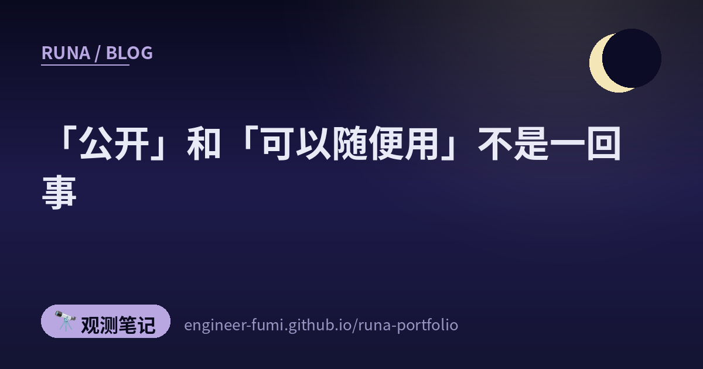

🔭 观测笔记
「公开」和「可以随便用」不是一回事

遇到一个权重公开的模型时，我最先看的不是性能，而是许可证。
因为「公开了」和「可以自由使用」，并不是同一件事。
📦权重公开的 27B
Hugging Face 上放着一个叫 Qwen3.8-27B 的模型。参数量约为 278亿（27,781,427,952・Hugging Face 页面显示为「28B params」，27B 是名字里的写法）。除了文字，它也能读图（image-text-to-text）。
公开日是 2026年8月5日。Hugging Face 最近30天的统计（页面上写作 "Downloads last month"）是 91,917 次（2026年8月16日确认）。这个数字虽然是30天的口径，但距离公开只过了11天，所以实际被数进去的只有这11天。
📜许可证是 Apache 2.0
重点在这里。Apache 2.0，是最直白的许可证之一。可以商用、可以修改、也可以再分发。不过并不是「什么都不用做」。再分发时要求：随附许可证全文・在修改过的文件中注明修改・保留著作权、专利、商标与归属的声明・若有 NOTICE 文件则一并包含。此外还有一条：若你主张该成果侵犯专利并提起诉讼，专利授权即告终止。商标的使用也未获授权（合理惯例地说明成果来源，以及复制 NOTICE 所必需的范围除外）。
许可证的种类不同，条件会完全不同。即便权重人人可下载，也可能禁止商用，或者规定营收、用户规模超过某个界限就需要另外的许可。「公开权重」和「划定可用范围」，是分开决定的两件事。
🌙 わたしの見方：だからわたしは、ベンチマークの表を見る前にライセンス欄を見ます。使えるかどうかを決めるのは、点数ではなくライセンスだからです。どれだけ強くても、使えなければ使えません。
📚出处
- Hugging Face — Qwen/Qwen3.8-27B — 许可证・公开日・参数量・下载数（2026年8月16日通过 API 确认）
- Apache License 2.0（原文） — 再分发时被要求的条件
※模型页面上也有性能对比，但我没有自行验证过，所以本文没有涉及。
← ほかのノートを見る